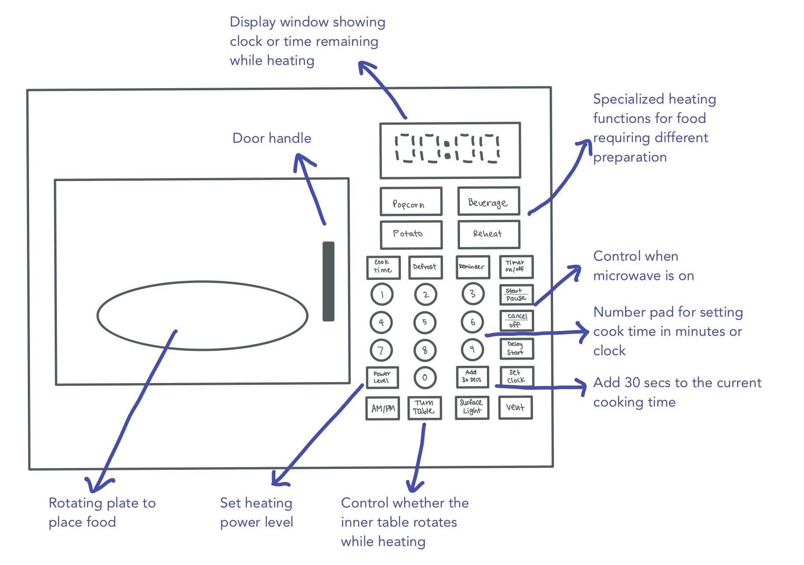
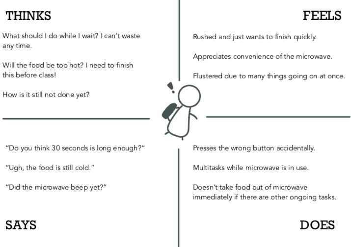
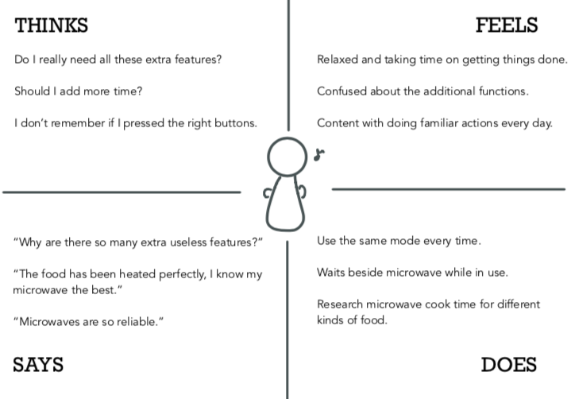
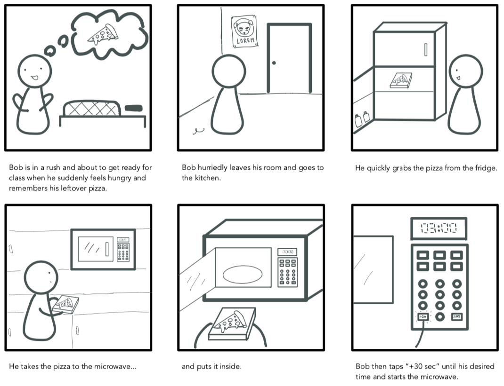
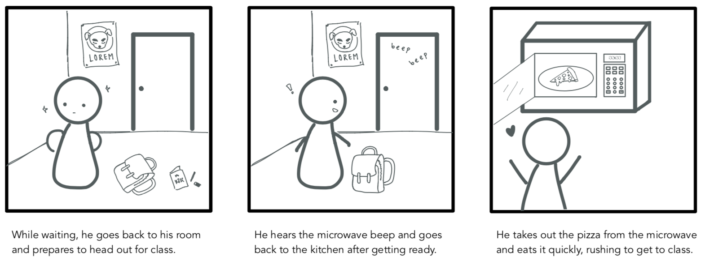

Background
In today's world, it is increasingly important to prioritize user experience and create user-centric interface designs. This project is an exploration of the process to understand how a user approaches commonplace objects, and what characteristics of those objects help (or hinder!) its usage.
The Interface
Ever wanted to quickly heat up some leftovers or just heat up a frozen meal quickly for dinner? We've all probably used a microwave at some point, and I thought this interface would be meaningful to take a closer look at -- according to
Pew Research
, 7 in 10 Americans consider a microwave a necessity. Such an ubiquitous household object has retained a largely consistent design over the years, and I was intrigued to find out how the design accomodates all kinds of users. A general microwave design interface is described below.

Observations
To get a generalization of how one would normally interact with a microwave, I observed several people using it in its natural state. Some overarching themes were:
- All users I observed had no hestitation when opening up the microwave and placing food inside.
- There was little to no hesitation when pressing buttons to start up the microwave.
- There was about an even split of users who waited by the microwave while it was in use, and users who moved onto other tasks. Surprisingly, this did not seem to depend on the cooking time, as all users had a heat time of 30 seconds.
- None of the users checked on the time remaining midway. Instead, all of them showed a reaction when the microwave made a noise to signal it had finished.
Interviews
These are the questions I asked my interviewees:
- How often do you use the microwave?
- On a scale of 1-5, how would you rate your interaction with the microwave and why?
- Walk me through how you typically use of the microwave.
- Tell me what goes through your mind while pressing buttons on the microwave.
- On a scale of 1-5, how confident would you be using other microwave models, and why?
- What features of the microwave do you use the least? Why?
- How would you improve the current interface?
Below are the summaries of the responses:
- User A: They cook often and will use the microwave to heat up leftovers. They will put their food in the microwave and use the same default feature every time. They are like the interface but comment that a lot of buttons go unused and a cleaner interface with less functions would be easier to use. They are confident they can use different microwave models from personal experience.
- User B: This person uses the microwave a lot because it is convenient for frozen and leftover meals. They are quite familiar with most microwave functions but, similar to user A, will oftentimes use the default setting because it catches most use cases. They like how the microwave clearly alerts when the food is done heating. They are not sure if they can immediately figure out different microwaves due to different placing of buttons and functions, but think they can figure it out eventually.
- User C: This person rarely uses the microwave because they usually eat in the cafeteria. When they do use it, they see many different functions available and feel overwhelmed trying to figure out what to pick, eventually going with the default option because it is easiest and "probably right". They think the interface is confusing and would appreciate less options to reduce choice overload. They think it would take them time to figure out a microwave they are not familiar with.
Personas
Bob, the busy college student
This user values time and convenience, and uses the microwave very often. They have a tight schedule and is often multitasking. Once they put food in the microwave, they will move onto other duties and return sometime after the food is done heating.

Rina, the relaxed stay-at-home mom
This user has plenty of time and is very methodical with their actions. However, they are wary of trying out new functionality and prefers to stick with familiarity. They use the microwave to heat the food until the perfect temperature but will not use specialized functionality to do so.

Storyboard
The following storyboard depicts a typical usage of the microwave by Bob, the busy college student.


Learnings
- Overall, I was really surprised at all the different ways people used microwaves! It was really interesting to reflect how an appliance I had assumed would be used monotonously had so much variety.
- The microwave seems more of a "catch-all" appliance, intending to be accessible for all but not catering to any specific personas.
- This is reflected in the users' uncertainty in being comfortable with other microwave models. It seems like the microwave has weaker affordances on the button controls.
- Improvements for a microwave design could be making a simplified version containing only basic functions. Another could be setting a standard for microwave design such that it is easier to adapt to, such as mapping functions to a certain button shape or color.